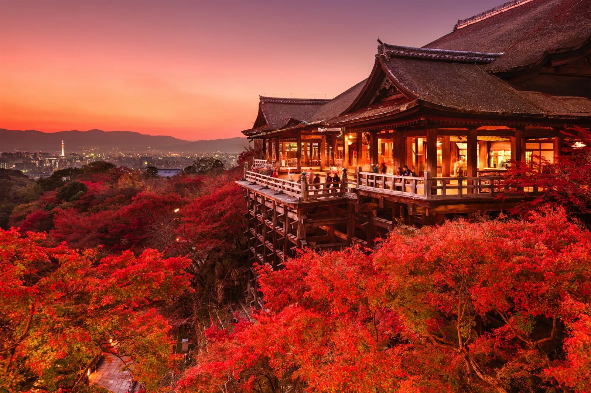

Paris, France
The city of Love , Fashion and Pastries.Dont miss the Eiffel Tower or the cuisine on the Seine River

Location
Kyoto, Japan
Kyoto is where Japan’s ancient soul lives on—in timeless temples, serene gardens, and streets steeped in tradition.
Location
New York City, USA
The Big Apple -A city that never sleeps .Visit the statue Of Liberty and Central Park
Location
Delhi, India
Delhi is a living tapestry of history and modernity, where ancient forts and bustling markets echo the soul of India.

Location
Sydney, Austrilia
Australia is famous for its stunning natural landscapes, unique wildlife, and iconic landmarks like the Sydney Opera House and the Great Barrier Reef.